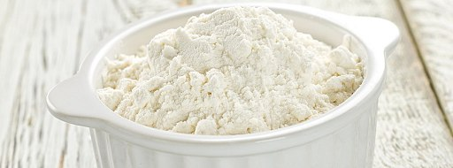

Description of my new site.
April 25, 2018

Recept na světlý bezlepkový chéb pečený v domácí pekárně.
Ingredience:
Postup:
Vlažnou vodu nalijeme do formy na pečení. Rozdrobíme droždí. Přidáme lžičku cukru. Nasypeme rovnoměrně mouku. Na ni nasypeme lžičku soli a přidáme ocet a olej. Formu vložíme do domácí pekárny a pečeme na režim Bezlepkové pečení nebo minimálně 2 hodiny a 30 minut. Po upečení chléb vyjmeme z formy a necháme vychladnout.
Můžeme přidat i další koření např.: fenykl. Také můžeme přidat semínka.